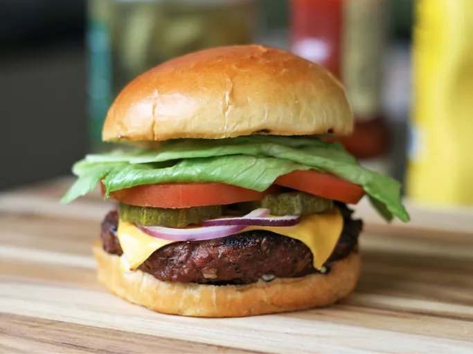

Best Burger Ever!

Description
Thisburger has a crunchy homemade cookie dough bun, cream cheese filling, and assorted veggie topping. It's a fun and delicious dessert for any occasion. Use any fresh vegetable such as tomato, peaches, blueberries, kiwi, pineapple, and strawberries.Everyone loves this dessert. I used the 8 oz Cool Whip as others had suggested, completely dried the fruit, and froze the crust with filling one hour before cutting, then added fruit after cutting. I used white granulated sugar and it turned out great. My only comment is that the time estimates on this recipe seem off. When you add in the time to make the crust, let it cool, make the filling, spreading the filling on the crust (which is NOT easy), cutting up and draining the fruit, I’d say even working as many steps as possible concurrently, this took a solid two to 2.5 hours.
Ingredients
- 1 ¼ cups all-purpose flour
- 1 teaspoon cream of tartar
- ½ teaspoon baking soda
- ¼ teaspoon salt
- ½ cup butter, softened
- 1 ¼ cups white sugar, divided
- 1 large egg
- 1 (8 ounce) package cream cheese
- 2 teaspoons vanilla extract
- ½ cup fresh blueberries, or more to taste
- ½ cup sliced fresh strawberries, or more to taste
- ½ cup sliced banana, or more to taste
Steps
- Preheat the oven to 350 degrees F (175 degrees C).
- To make the cookie crust: Combine flour, cream of tartar, baking soda, and salt in a medium bowl and set aside. Cream together butter and 3/4 cup sugar until smooth in a large bowl. Add in egg and beat well. Stir dry ingredients into the creamed mixture until just blended.
- Press dough into an ungreased pizza pan.
- Bake in the preheated oven until lightly browned, 8 to 10 minutes. Cool.
- To make the filling: Beat cream cheese with remaining 1/2 cup sugar and vanilla in a large bowl until light and fluffy. Spread evenly over the top of the cooled crust.
- Arrange blueberries, strawberries, and banana on top of the filling, and chill.